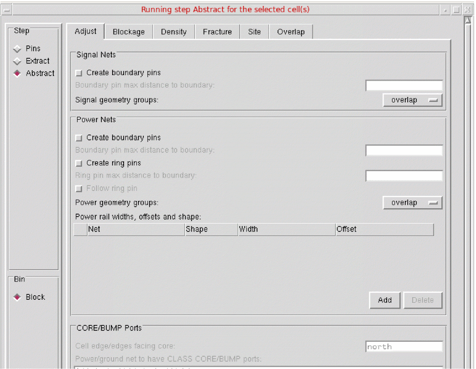
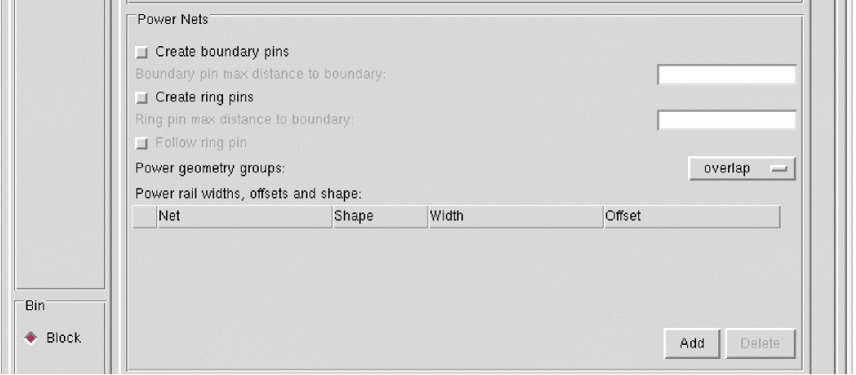
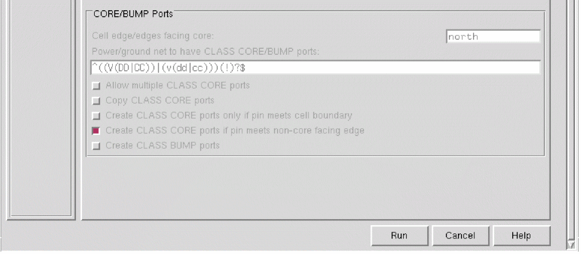

Customizing Pin Shapes in Standalone Abstract Generator
The options on the Adjust tab of the Running step Abstract for the selected cell(s) form control how pin shapes are adjusted during connectivity extraction for creating the final required pin shapes. These pin shapes are then fractured into rectangles. The options help you ensure that if a pin shape is reduced in any way, the discarded part of the pin is turned into a blockage, and the blockage is spaced sufficiently away from the reduced pin shape.
To customize the pin shapes in Standalone Abstract Generator:
-
Choose Flow – Abstract. The Adjust tab is the first tab in the Running step Abstract for the selected cell(s) form.
 -
In the Signal Nets section, you can control how pin shapes are adjusted during connectivity extraction to create the final required pin shapes for signal nets.
- Select Create boundary pins to adjust the pin shapes created during extraction to be square and on the cell boundary.
- Use Boundary pin max distance to boundary to specify the maximum distance (in microns) of the signal net or power net geometries from the boundary so that they can be considered as boundary pins.
- Select Signal geometry groups to control how signal net shapes are grouped into LEF PORTS.
-
In the Power Nets section, you can control how pin shapes are adjusted during connectivity extraction to create the final required pin shapes for power nets.
- Select Create boundary pins to adjust the pin shapes created during extraction to be square and on the cell boundary.
- Use Boundary pin max distance to boundary to specify the maximum distance (in microns) of the signal net or power net geometries from the boundary so that they can be considered as boundary pins.
- Select Create ring pins to create ring pins where any extreme shapes, that are close to the cell boundary existing in a power net are found to form a ring.
- Use Ring pin max distance to boundary to specify (in microns) the maximum distance within which the extracted power net geometry can be from the boundary in order for it to be considered as part of the ring, and therefore, be included in the abstract as pin geometry.
- Select Follow ring pin to consider all pin shapes, including the ones that are not part of the ring, as pins in the final abstract.
-
Select Power geometry groups to control how power shapes are grouped into LEF
PORTS. - Use Power rail widths, offsets and shape to specify the characteristics of the power and ground rails for the current bin.
-
In the CORE/BUMP Ports section, you can specify the following CLASS CORE-specific information to Abstract Generator.
-
Use Cell edge facing core to specify the direction in which the
CORE-facing edge is pointing, north, south, east, west, or a combination of any of the four core edges. -
Use Power/ground net to have CLASS CORE ports to specify the nets that should have
CLASSCOREports. This can be specified by entering a regular expression in the field. -
Select Allow multiple CLASS CORE ports to specify that two ports equidistant from the core-facing edge of a pad are both assigned the
CLASSCOREstatement in LEF. -
Select Copy CLASS CORE ports to duplicate any geometry found to belong to a
CLASSCOREport on the net (set by using the Power/ground net to have CLASS CORE ports option) in a non-CLASS COREport to the exported abstract LEF. -
Select Create CLASS CORE ports only if pin meets cell boundary to specify that only the pins that either touch or cross the core-facing edge of the boundary become
CLASSCOREports in LEF. - Select Create CLASS CORE ports if pin meets non-core facing edge to allow the pins that touch the non-core facing edge to become eligible to be included as CLASS CORE ports.
- Select Create CLASS BUMP ports to consider power nets of cell type IO for creating the CLASS BUMP ports.
-
Use Cell edge facing core to specify the direction in which the
- Click Run.
Related Topics
Return to top